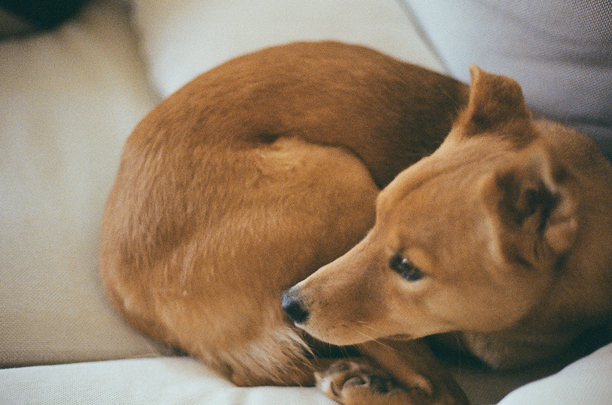

G-ARCH PROJECT

두 마리 다 경계를 많이 하진 않네요?
막냉이가 오빠 있다고 확실히 자신감이 좀 붙은거 같아요.
서로 오랜만에 본거 아니에요?
맞아요. 몇 년 만에 본건데, 알아본 거 같아요.
지금 강아지들이 돌아다니고 있는데, 일단 자기소개 먼저 해주세요.
저는 올해 서른이 된 반석이라고 하고 지금 설계사무소 다니고 있습니다.
몇 년 차시죠? 꽤 되셨던거로 기억해요.
비공식으로는 잠시만… 7년 차예요. 좀 애매한게 중간에 한 반년을 쉬었고 또 중간에 반년을 쉬고 그랬어요. 실제경력은 6년 미만일 거 같아요
그래도 7년정도 계속 한 회사를 다니신거네요.
3년전쯤 몸이 안 좋았어요. 프로젝트가 준공날때쯤 후유증처럼 크게 아팠던 거예요. 그래서 그때 공식적으로 퇴사하겠습니다 하고 쉬는데 소장님이 계속 전화를 와서, 집에서 재택으로 하면서 해보는건 어떻겠냐 하신거죠. 그러다보니까 계속 인연이 이어져 왔네요.
처음 일하게 된 계기가 있어요?
처음엔 군대 입대전에, 종로가서 놀 비용을 벌려고 일했었어요. 이 얘기는 기니깐 잠시 아껴놓을께요
그래요. 그럼 오래다니는 이유가 있나요?
지나고 보니, 정말 오랫동안 다니고 있는 상황이네요. 몇 가지 이유가 있었어요. 한 가지는, 제가 지금 재택근무가 가능해요. 제가 워라벨 지키면서 쉬엄쉬엄 일을 할 수가 있으니까 그게 제일 컸어요. 두 번째는 이 사무실이 프로젝트를 좀 길게 해요. 주택이라고 하면 최소 8개월에서 1년 정도. 그리고 감리를 1년 하죠. 그걸 진득하게 하는 과정에서 제가 배운 게 너무 많은 거예요. 그래서 연차가 쌓일수록 경험하는게 많아지게 되죠, 재밌는건 동시에 제가 뭘 모르는지를 서서히 알아가는 과정이기도 하더라구요. 이 과정이 또 재밌기도 하고, 템포를 천천히 하면서 배우기가 좋다보니까 계속 다니고 있는 것 같아요. 뭔가 바쁘면 휩쓸리는데, 템포가 느리면 제가 계속 정신을 붙잡을 수 있달까요.
저는 이 느린 템포라는 게, 지겨움 혹은 지침으로 왔었는데, 그 과정을 어떻게 보냐에 따라서도 많이 다른 거 같아요. 전 그래서 중간에 짧은 프로젝트 하나씩 섞어서 하면 그게 또 리프레쉬가 되더라고요.
제가 뭔가 이 회사를 나가서 나중에 독립을 하게 되면 그때는 진짜 모든 걸 제가 겪어야 하잖아요. 스스로 책임을 져야 되는데, 지금은 그래도 회사라는 보호막 안에서 제가 마음대로 막 사고를 치든 뭘 하든 할 수가 있는거죠. 그리고 전체적인 템포 자체는 느린데 그 안에서 제가 결정 짓고 사고 치고 수습하고 매일매일 정신이 없다 보니까 그런 데서도 재미를 느끼는 것 같아요.
감리를 나가다보면 트러블도 많이 있을 거 같아요.
시공사, 정확히는 소장님에 따라 매번 달라져요. 어떤 분은 좋은걸 하기 위해서 더 노력하시고 그러다보면 서로 윈윈하는 경우도 있는데요, 또 어떤 분은 정말 이래도 되나 싶을 정도로, 현장관리를 안하는 분도 계세요. 그런곳은 갈등이 누적되면, ,, 스트레스로 새벽에 깨기도 해요. 서로가 한 프로젝트에서, 추구하는 목적이 다른거에요. 관계된 모두가 불행해지는거 같아요.
그렇죠, 그래도 감리하면서 많이 배웠다고 생각해요.
맞아요. 설계보다는 감리에서 배우는게 거의 구할이라고 생각해요.
지금 사무실은 주택을 주로 하는 걸로 알고 있는데, 주택에 원래 관심이 있었나요?
원래 저는 옛날부터 종교건축하고 싶었어요. 저희 집이 독실한 크리스천 집안이거든요. 부모님도 항상 교회에 계시고 그러다보니 자연스레 종교건축을 해야겠다 생각을 했었어요. 사실 이 회사도 주택뿐 아니라 다양프로그램을 해요. 지금도 근생 건물들을 하고 있어요. 그런데 돌이켜 보니, 이 프로그램이라는게 그렇게까지 중요하지 않다…라는 생각이 들더라고요. 물론 이해관계도 다르고 기능도 다르긴 한데, 큰 틀 안에서 그러니까, ‘건축’ 안에서는프로그램이 중요한거 같진 않아요. 구축법이 같다고 해야할까요. 이런 관점에서 저희 사무실은 그렇게 감각적인 사무실은 아니거든요? 선 하나를 그을 때도 이게 맞을까 틀릴까, 고민하면서 한 땀 한땀 해요. 감각적으로 이 선이 맞다, 하면서 가는게 아니라요. 그런데 제가 타고난 기질이 느린 템포로 가는 걸 좋아한다고 했잖아요? 그래서 어떤 종교 건물을 당장 하고 싶어서 그런 사무실에 가는게 아니라 지금 내 기질에 맞는 데서 일단 조금 있어보자. 이렇게 된 거 같네요.
반석님이 말씀하시는 감각적인 것과 제가 생각하는 감각적인 것이 좀 다른거 같아요. 전 반석님 회사의 건물을 보면 감각적이다, 라고 느꼈거든요? 과정에서의 감각적인 것과 결과로써의 감각적인 것의 차이일까요?
설계를 하는 과정은 굉장히 이성적이에요. 예를 들어 조명을 쏜다고 했을 때 감각적인 사람들은 뭔가 조명을 이 곳에 하면 멋있겠다. 하는 거 같은데, 여기서는 이 시간대에 북향 빛의 색깔 온도랑 다르니 이곳에 조명을 넣어야 겠다. 이런식으로 뭔가 계산적으로 하는거죠. 남쪽에 어디다가 창을 두는 게 좋지 않을까? 아니다. 조금 더 저쪽 가는 게 좋지 않을까 계속 이렇게 계산을 하면서 해요. 벽돌도 재교도 그렇고 벽돌의 두께라든가 혹은 체스처 질감 마감이 그런 것도 사실 다 그런 데서 오는 거예요. 계산을 하는 거예요.
제가 다녔던 회사랑은 접근이 많이 달라서 신기해요. 그러면 혹시 프로토 타입이 있는 주택을 하신 적도 있나요? 분양주택? 일반 주택과는 과정이 좀 다를 거 같아요.
제가 한 적은 없는데, 다른 동기가 한 3~4년 전에 타운하우스를 했었어요. 당연한거지만, 프로토타입을 짤 때, 대지를 기반으로, 어떠한 이상적인 공간으로 설계를 하더라구요. . 그리고 미러를 시킨다거나 테라스를 하나 넣는다거나 하는 식으로 조금씩 다른 타입이 생기는거죠. 크게 다른 점은 못 느꼈어요.
개인 주택은 아무래도 클라이언트의 니즈가 들어가기 마련인데, 분양주택은 조금 더 모두를 위한 주택이어야 한다는 것? 조금 더 보편적인?
맞죠.아무래도 보편적인 걸로 하죠. 그런데요, 한가지 재밌는 건 있어요. 개인주택이라도, 건축주들이 분명히 특별한 니즈가 분명히 있어요. 그런데 소장님이 건축주를 설득 할 때 그 특별한 니즈가 보편타당해야 들어주시더라고요. 그러니까, 어떤 니즈가 주택을 해친다. 그러면 소장님이 그러시는거죠. 10년, 20년, 30년, 평생 후회할 수 있다. 그러다보니까 결과물만 보면 타운하우스나 개인주택이나 큰 차이가 없어요. 좋은 집은 사는 사람이 누구든 오롯이 품어주는 거 같아요.
설득하는 방향이 꽤 독특하신 거 같아요. 무언가 보편적인 공간이 어떤 이데아로 있고 계속해서 그곳으로 가는 듯한 느낌. 그게 분양주택이건, 개인주택이건, 뭐 근생이건 상관없이요.
지향점. 그런 관점에서 이 사무실이 감각적인 것 보단 이성적인 프로세스를 갖고 있다고 생각합니다.
7년전과 비교했을때, 주택을 의뢰하는 사람들의 목적?이 조금 달라졌을 거 같아요. 잘은 모르지만, 가령 7년전엔 아파트의 대안으로써 주택을 고려했다면, 지금은 별장으로의 주택을 고려한다거나 할까요.
저희 같은 경우에는 프로젝트 기간이 긴 만큼, 클라이언트 분들이 그렇게 많지는 않아요., 체감되는건 클라이언트의 나이대에요. 제가 처음 입사했을 때는 노년층이 많았는데, 최근에는 40대가 정말 많아졌어요. 사회적인 변화라는 걸 제가 느끼기에는 애초에 이 회사의 규모가 작고 그러다 보면 건축주의 수도 적고 그래서 힘든 것 같네요.
흔히 고급주택이라고 말을 하죠. 그런 주택을 설계 하다보면 내 삶이랑 좀 다른 부분이 많잖아요. 그럴 때의 괴리는 없나요? 저는 회사 초반에는 공공건물을 주로 했었어요. 그러다보니까 제가 경험한 공간들로 이해를 하는데, 주택은 모르겠는거에요. 거실에서 뭘 하지? 서재에선 뭘 하지? 주방에선 직접 요리를 하나? 너무 모르겠는거에요, 그러면서 괴리도 커지고.
처음에 한 2년 동안은 그게 엄청 컸어요. 오디오 시스템만 무슨 몇억이라는 거에요. 제가 상상가능한 범주, 그 이상인거죠. 그래도 나이차가 보통은 있으니까 조금 덜한데, 그분들의 자제들은 저랑 비슷한 나이대잖아요. 정말 가볍게 일상을 얘기하는데, 그 일상의 간극이 너무 큰거에요. 제가 사회초년생때 살던 원룸은, 그 앞에 술집도 많고 그래서 취객이 제 방 두드리기도 하고 그랬거든요. 그런게 일상이었는데, 너무 큰거죠 그 간극이.
일상이라는 말이 참 잔인하게 들리네요.
근데 그러다가 이게 어떻게 이제 해소가 됐냐 하면 제가 자연스럽게 연차가 쌓이면서 건축주분들하고 직접 대면하는 게 많아졌어요. 그러면서 느낀게, 결국은 똑같은 사람이라는 거 에요. 그분들도 결국은 정말 사소한 거에 감동받고 사소한 거에 화를 내고 이제 뭔가 그런 지점에서 그래도 결국 똑같은 사람이네라는 데 사실 위안을 좀 많이 얻었죠.
사실 흔한 말이긴한데, 그렇죠. 어쨌든 다 똑같은 사람이니까요.
그리고 소장님이 말해주신 게 또 있어요. 그런 사람들 만날 때 기 안 죽고 말을 할 수 있을 정도로 너 스스로 내공이 쌓이면 그때부터 그게 아무것도 아니라는거에요.
소장님이랑 정말 돈독한 사이? 가까운 사이라는게 인터뷰 내내 느껴지네요.
그럼 나중에 독립을 한다고 했을 때 해보고 싶은 건 어떤건가요?
프로그램이나 양식적으로 없어요. 그런데 명확하게 있는 게 있죠. 제가 어렸을 때 시내 한가운데 살았거든요? 그러니까 골목길도 많고 그런 주택가에요. 그런 풍경들이 저는 기억에 선명하게 남아있어요. 그냥 그런 거 있잖아요. 시장 가면 아이고 여기 창문 좀 수리해 줄 수 있어? 하면서 그런 친근한 거요. 검박한 것. 애초에 대학교 갈 때 막 자기소개서 쓸 때도 똑 같은 생각이었고, 어릴 때부터의 꾸준한 거였어요. 그러니까 평범하지만, 그러니까 동네에 정말 사소하고 별거 아니지만은 마을을, 동네를 예쁘게 꾸미는 그런거요.
생각도 못한 대답을 들었어요. 저만 너무 욕망에 가득찬 삶을 살고 있는 건 아닌가 하는 생각도 들고요.
그럼 이제 다른 이야기를 해볼게요. 회사만 오래다니신 게 아니시죠. 연애도 장기 연애를 하고 있다고 들었어요.
그렇게까지 오랜 아니고 지금 5년 됐나 그럴거에요
5년이면 짧진 않다고 생각이 들어요. 비결이 있을까요?
이전 연애들은 대부분 3개월 4개월 이렇게 사귀고 끝났어요. 저도 신기하리만큼 지금 만나는 사람과 안정적으로 오래 잘만나고 있습니다. 서로 티키타카가 맞기 때문에 오래가는 거 같은데,, 만약 굳이 비결을 꼽자면, 서로 존댓말 쓰는 거, 그게 도움이 되는 것 같아요. 지금도 애인하고 서로 뭐 뭐 했어요 이렇게 존칭으로 하거든요.
말이 한번 씩 정제가 되겠네요.
그리고 지금 애인하고는 연애한지 일주일만에 베트남으로 여행을 갔어요. 주변에서 다 헤어질 거라고 말했는데, 갔어요. 사실 여행을 가면 볼 꼴 못 볼 꼴 다 보잖아요.
그렇죠, 안 좋은 모습을 보일 수도 있고요.
베트남에서 땀 뻘뻘 흘리면서 짜증도 나고, 화장도 땀에 녹아서 흐르고. 그런데 그게 오히려 처음에 서로를 엄청 편하게 만들어버린거에요. 완벽한 모습만을 보여줘야 돼 하는 시기가 없었던거죠.
그게 잘됐으니까 하는 얘기인 거 같긴 하지만요.
그 뒤로 서로 그냥 엄청 편하게 되다 보니까 뭔가 크게 싸울 일도 없었고요. 싸울 일이 있다 싶으면 서로 그 말을 대놓고 해요. 그 자리에서
그러니까 친한 사이가 된다는 건 어느 정도 편해짐이 내포되어 있는 건데 그렇게 처음에 여행을 감으로써 , 그게 좀 초반에 그렇게 될 수 있었던 거죠. 완벽한 모습만을 위해 연출하는게 잘못된 건 아니지만 그 시간이 좀 줄어들 수 있는 건 좋은 거 같아요.
예전에는 연애할 때 말 그대로 세팅 시간이 너무 긴 거예요. 막 꾸며야 되고 그런데,,, 지금 애인은 편하게 기본만 하고 만나기도 하니까요.
행동이 편해지니, 마음이 편해지는 거 같아요. 딱히 극적인 거 없이 평탄하게요.
일과 연애를 겹쳐서 5년정도는 같이 하셨는데, 균형을 잡는 방법이 있을까요?
저와 애인이랑 맞았던 지점인데, 스스로가 ‘자기자신’부터 바로 서야, 그 다음이 있는 거다. 그러니까 서로 연애하더라도 나만의 시간이 필요하다 싶을 때는 그 주는 보지 말자, 라고 처음부터 약속이 됐었어요. 제가 템포가 느리다고 말씀드렸었는데 저는 저 혼자 있는 시간이 좀 중요해요. 그래서 클럽을 가더라도, 중간에 꼭 나가서 혼자서 이태원 주택가 골목길 있잖아요 거길 걷고 와야돼요.
친구들이랑 같이 갔을 때도 그런단 말이죠?
애들 애들이 이해를 해줬어요. 왜냐면 저는 친구들하고 노는 것도 일을 하는 것도 애인을 만나는 것도 밖을 나가는 거 조차 저한테는 에너지 소모인 거예요. 그래서 혼자서 에너지를 충전할 시간이 필요한거죠.
지금 제가 바라는 연애상을 지금 말씀하시고 계셔서 감탄하면서 듣고 있어요.
아까 못했던 이야기가 있죠. 처음 일하게 된게 종로가서 놀 비용을 벌기 위해서라고 하셨는데… 말씀해주시겠어요?제가 아까 크리스쳔이라고 했잖아요. 그리고 저희집이 부유한 편이 아니라서, 대학교 떄 그런게 있었어요. 서울로 상경해서 열심히 공부를 해서 장학금을 타고 동시에 하나님의 자녀로 잘 살아야지. 그런 생각이 있었어요. 물론 제가 게이인건 유치원 때 알았지만요. 언젠가 이성애자로 돌아가야지 그런 생각을 했어요.
계속해서 자신 안에서 싸우고 있는 거였겠네요.
대학 5학년 1학기까지 그렇게 다녔어요. 대학교 동기들이 기억하는 5학년 1학기 까지의 제 모습은 매일후드티에 도수 높은 안경 쓰고 다니는 모습이었을 거에요. 그러다가 졸업전시 준비를 하면서 후배를 설계실에서 보게 된거에요. 그래서 인사만 주고 받았는데, 어플에서 보게 된거죠.
그럼 되게 설레잖아요. 자만추하게 된거 같고.
네 맞아요. 그 친구가 이제 사귀자고 해서 사귀게 됐어요. 사실상 사귄건 아니에요.좀 민망하지만은 그 당시에 그게 저한테는 첫 연애였었고 뭔가 내 감정. 흔히 말하는 사랑이라는 감정에 대해서 처음 솔직하게 대면하게 된거죠. 그러다가 결국 헤어지고 나니까, 심장이 아파서 잠에서 깨는게 아 이런거구나 싶더라구요.
아이고 어떡해요. 저도 그런적이 있었던 거 같아요.
그래서 친한 이쪽 친구한테 처음으로 커밍아웃을 하면서 말을 했어요. 그랬더니 그 친구가 제가 만났던 애가 엄청난 역대라는 거에요? 거기서 갑자기 현타를 세게 맞았죠. 걔는 이제 막 이제 대학교 올라온 상경한 애인데, 자기 하고 싶은 걸 다 하는데, 저는 대학교 내내 촌스럽단 말 듣고 살았던거죠. 그런 와중에 군대도 끌려가야하는 상황이거요. 그러면서 제가 폭주를 하게 된거에요. 그날로 시티에서 동갑 단톡방 6-7개를 들어갔어요.
완전 딱 돌았구나.
동시에 이제 제가 꾸미기 시작했어요. 이제 렌즈를 끼고 머리 항상 올백으로 다니고, 그런데 그때 몸이 너무 아팠어서 십 몇키로가 빠졌어요. 근데 그게 또 제 외모 자신감에는 도움이 된거죠. 그러면서 이제 노는 비용이 마침 필요한 찰나에 교수님께서 일해보지 않을래? 해서 일하게 된거였습니다.
그렇죠, 왜 일하게 됐는지 그 질문에서 시작한 이야기였죠.
그때 제가 친형이랑 같이 살고 있었거든요. 그런데 형이 보기에 너무 이상한거죠. 얘는 공부밖에 안 했었고 후드티만 입고 다녔고 모범생이었던 애가 하고다니는게 한순간에 달라진거니까요. 그리고 퇴근하고 오면 자고 있는데 일어나면 또 없고. 술냄새 담배냄새 풀풀 풍기면서요. 형이 그때 이상하게 느낀 거죠. 나중에 와서는 나 그때 너 죽는 줄 알았다고 얘기를 하더라고요. 밤새고 회사가고, 다시 밤새고 회사가고, 일상적인 루틴이 아니었으니깐요. 그런데 형이 제 핸드폰을 본거에요. 그떄. 남자랑 애정어린 카톡을 한 걸 본거죠.
아이고, 그건 하지 말지…
모처럼 형이랑 족발을 먹는데, 정확하게 장인 족발이었던게 기억이 나네요. 형이 너는 뭐 솔직히 니 내한테 얘기해도 된다. 이러는 거에요.
너무 무서워요. 그런 상황 너무 견디고 싶지 않아…
내가 게이인걸 알고 있다라고 하는 거예요. 그러면서 내가 너 게이인걸 알고, 씨티라는 데를 들어가서 게이들 가족모임에를 나갔었다. 딱 그말을 하는거에요. 그 말을 듣자마자 진짜 그 말을 들자마자 펑펑 운거에요. 펑펑. 나는 내 평생을 그렇게 가슴 졸이고 살았는데 형이 그렇게 일단 내 가족 누군가가 알아줬다는 게 너무 감동이었던거죠.
가족 모임을 갔다는 거에서 너무 깜짝 놀랐고, 너무 눈물이나고, 신기하고, 복잡해요 지금.
그런데 형은 여태까지 너가 지금 내가 여태까지 내가 너를 몰랐다는게 너무 미안하다고 하는 거에요. 그러면서 이상하게 생각안한다고. 형이 일진이었는데… 예고 친구랑도 많이 놀고, 그런데에 게이나 레즈가 더 많았던 거죠. 그러면서 나중에 이태원이랑 같이 가자 그러는 거예요. 실제로 몇 년뒤에 형이랑 형수님이랑 같이 갔었어요 친구들도 보고
좀 많이 간거 같긴 하지만… 성공적인 가족에 대한 커밍아웃이라고 해야할까요.
그렇게 지내다가 주말에 잠깐 부모님 집에 내려갔어요. 엄마랑 TV를 보는데 정말 짤막하게 퀴퍼에 대한 기사가 나왔어요. 그런데 엄마가 갑자기우시더라고요.
저 지금 너무 무서워요…
이제 어색하니까 제가 제 방을 왔어요. 근데 이제 1시간인가 그때 엄마가 딱 들어오시는데, 딱 그 느낌이 오잖아요. 엄마가 하신 말이 나는 너가 게이라서 슬픈 게 아니라 너가 기독교 집안에서 너 혼자서 얼마나 혼자서 속앓이를 했을지, 난 그게 너무 가슴이 아프다고 하는 거예요. 그래서 그 말에 또 역시나 대성통곡을 하고.
아까부터 울고 싶은걸 참고 있어요 지금.
이제 가족들이 일단 알고 나를 보듬어주는데 그때부터 자신감이 막 생기더라고요.
주변에서도 많이 달라졌다고 생각할 거 같아요, 외적으로만 바뀐게 아니고요.
그렇죠 아무래도 그럴 거에요. 그때는 완전 과도기 같았어요. 그러다보니까 같은 과 이쪽 형이 “야, 내 동기들이 너 얘기하더라. 너 조심해.” 그렇게 얘기해 줬었어요. 그런데 결국 소문은 퍼졌죠. 제가 게이라는. 근데 참 재밌었던 게 소문이 쫙 퍼지니까 내 사람이랑 내 사람 아닌 사람들. 이렇게 분류가 되는 거에요. 웃긴건 저랑 친한 동기들은 저를 감싸주는데, 오히려 인사도 대면대면 했던, 친하지도 않았던 사람들이 정작 제 얘기를 그렇게 꺼내고 다녔더라구요.
맞아요. 전 점점 커밍아웃하는 사람이 늘어나기도 했고, 이젠 커밍아웃 한 사람만 주변에 남는 거 같아요.
그럼 이제 공식질문이 된거 같은데, 미래의 반석. 어떻게 살고 계실 거 같나요?
저도 마침 이 질문을 주제로, 지난주에 이쪽 친구들하고 얘기했었어요. 사실 잘 안그려진다고 얘기를 했어요. 어떤 선례들이 이제 눈앞에 있으면 뭔가 그게 기준이 될텐데, 그렇지 않은거죠. 주변에 삼사십대 사람들은 좀 알고 있는데, 그보다 많은 사람들은 제가 알고 있는 분들은 없거든요. TV나 그런데서 잘 나오는 것도 아니고 말이죠. 뭐 레인보우 타운 만들자 그런 얘기는 항상 하기는 하지만요. 그 얘기를 많이 하긴 하는데 사실 안 그려진다. 진짜 사실 모르겠다인 거예요. 근데 한 가지 제가 평생 살면서 봤던 모습 중에서 유일하게 나이 든 분들 모습 중에 유일하게 좋았던 모습이 딱 한 가지가 있어요. 탑골공원에서 지하철 탈 때였나 지하철 타고 나서였나, 할아버지 두 분. 백발 두 분이서, 근데 또 두 분이 엄청 고우세요. 또 옷도 잘 입으시고, 그렇죠. 그런데 서로 이제 손을 잡고 계신 거에요. 그 그림이 진짜 아름다워 보일 정도로, 저에겐 임팩트가 엄청 컸어요. 그러면서 이쪽 세계에 대한 생각이 살짝 바뀐 게, 난 정말 딴 건 모르겠고 내가 사회적 명성을 얻든 아니면 가난하게 살든 어떻게 살든 그건 모르겠는데, 내가 나이 먹었을 때 진짜 백발이 됐을 때 저런 결의 사람이 되자. 그런걸 풍길 수 있는 사람이 되자. 옆에 누가 같이 있으면 더 행복하겠고, 그렇게 살면 나는 진짜 행복한 삶이었다고 얘기할 수 있었다. 라고 말할 수 있지 않을까?
그런 상상, 너무 멋진 거 같아요. tv에서는 배우건 일반인이건 이렇게 산다, 하면서 보여지는게 나이별로 많은데, 그게 꼭 게이여야하는 건 아니지만, 쉽게 볼 수 없어서 항상 궁금한 거 같아요.
그래서 요즘 저는 좀 좋게 생각하는 게, 유튜브에 보면 이쪽 사람들 커플들이나 개인방송이나 많잖아요. 그런 분들 보면서 조금씩 위안을 받기도 하고, 그러는 거 같아요.
맞아요, 조금씩 힌트를 얻기도 하고요. 이 인터뷰도 조금은 위안? 힌트가 되었으면 좋겠네요.
인터뷰 진행 및 사진 : 정민 일러스트 : O